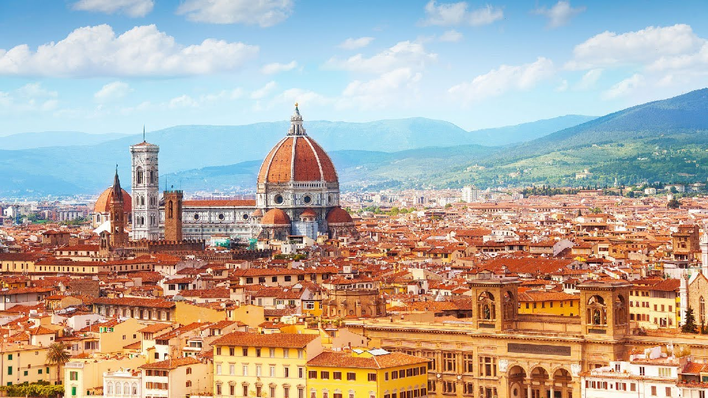
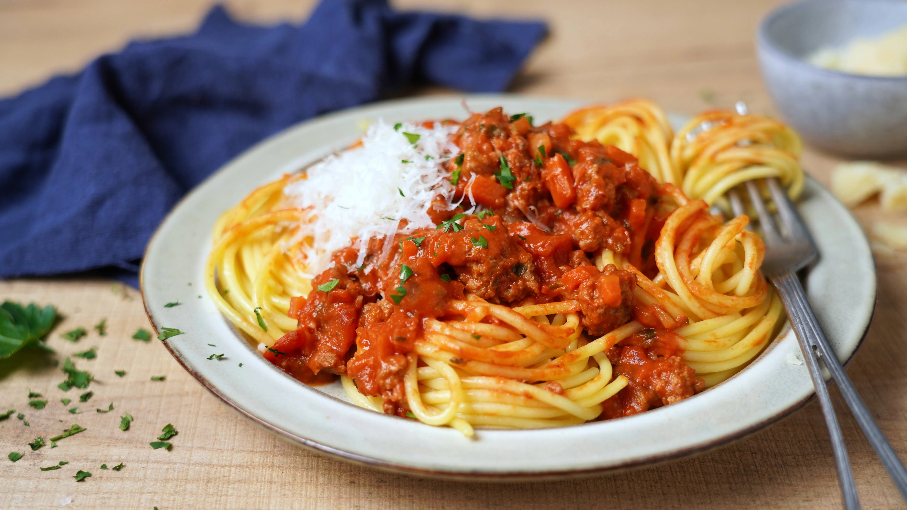
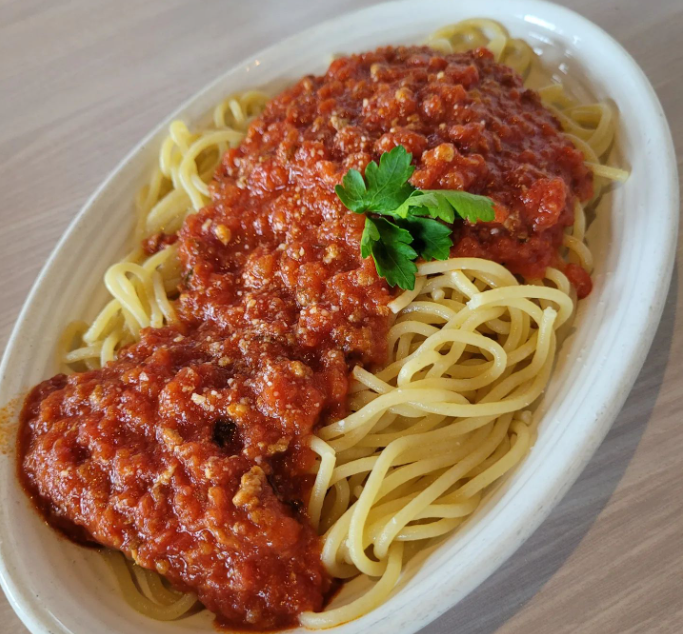

Chào mừng bạn đến với những điểm đến tuyệt vời nhất trong ngành du lịch của Ý-
Khi nhắc đến Ý chắc chắn rằng hầu hết chúng ta đều nghĩ đến một quốc gia có hình dạng giống như một chiếc ủng và một vài tên địa danh du lịch nổi tiếng như Rome, Venice, Milan, Florence,…
Quốc gia hấp dẫn nhất Châu Âu được xem là nước Ý, với những món ăn không thể cưỡng lại và kiến trúc tuyệt vời. Ý là một nơi kỳ diệu với phong cảnh tuyệt đẹp được thiên nhiên ưu đãi, khiến bạn đi từ bất ngờ này đến bất ngờ khác.
Thủ Đô Rome
Rome là thủ đô của nước Ý với nhiều địa danh cổ kính, nhà thờ, bảo tàng và quảng trường. Một số điểm đến nổi tiếng bao gồm Đấu trường Colosseum, Vatican City, và đài phun nước Trevi.
Thành Phố Florence
Thành phố Florence là cái nôi của thời kỳ Phục Hưng, nổi tiếng với các kiệt tác kiến trúc và bảo tàng như nhà thờ Florence và cầu Ponte Vecchio.
Tiramisu
Tiramisu là món bánh nổi tiếng của Ý, với sự kết hợp của rượu Rhum, cà phê, cacao và kem. Được mệnh danh là "Thiên đường trong miệng của bạn".
Bolognese
Sốt Bolognese là món ăn truyền thống của Ý, được ăn kèm với mì Fettuccine hoặc Spaghetti. Món này đã trở thành nổi tiếng toàn cầu.
Mì Ý Spaghetti
Mì Spaghetti là món pasta truyền thống, có thể kết hợp với nhiều loại sốt khác nhau, là món ăn không thể thiếu trong ẩm thực Ý.